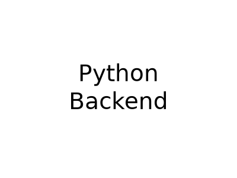
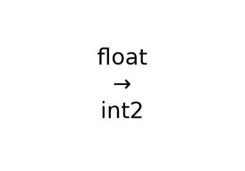
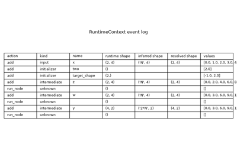
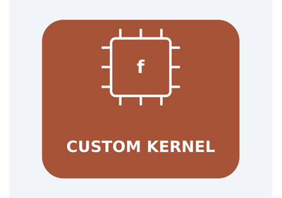

Note
Go to the end to download the full example code.
Retrieve a backend test case and display its model and data#
The ONNX backend test suite shipped with onnx-light is exposed
as a small C++ data model bound to Python under
onnx_light.onnx.backend. Each entry is a TestCase made of
a ModelProto plus one or more DataSet (lists of reference
input / output Tensor instances).
onnx_light.onnx.backend.collect_test_cases() returns the C++
test cases as a list. When called without any argument (or with
an empty string) it returns every registered backend test case.
When called with an operator type, or one of the special category
strings "shape", "inference" or "nan_inf", it returns
only the cases whose top-level graph contains a node with that
op_type (or that belong to the requested category).
To filter cases by their name (rather than by op type), use
onnx_light.onnx.backend.collect_test_cases_by_name(), which
accepts an ECMAScript regular expression matched against
TestCase.name with std::regex_search semantics
(substring match unless anchored with ^...$).
This example:
lists how many backend test cases are registered in total via
collect_test_cases()without argument,retrieves the
test_abscase viacollect_test_cases("Abs"),demonstrates
collect_test_cases_by_nameto fetch cases by a regular expression on the test case name,displays its
ModelProto,displays the reference input and output tensors,
demonstrates how to use
make_test_class()fromonnx_light.onnx.backendto systematically validate shape inference across many backend test cases.
from __future__ import annotations
import numpy as np
from onnx_light.onnx.backend import collect_test_cases, collect_test_cases_by_name
from onnx_light.tools import pretty_onnx
All backend test cases#
Calling collect_test_cases() without any argument (or with an
empty string) returns every registered backend test case. This is
useful to discover what is shipped with onnx-light and to drive
parametrized tests over the full suite.
Total number of backend test cases: 2145
First five names : ['test_cc_scan_basic_trip_count', 'test_cc_scan_zero_trip_count', 'test_scan_sum', 'test_scan9_sum', 'test_scan9_multi_state']
Retrieve a backend test case#
collect_test_cases("Abs") returns every backend test case that
exercises the Abs operator. We pick the canonical test_abs
case from the result.
abs_cases = collect_test_cases("Abs")
print(f"Number of Abs cases: {len(abs_cases)}")
print(f"Names : {[tc.name for tc in abs_cases]}")
tc = next(tc for tc in abs_cases if tc.name == "test_abs")
print(f"name : {tc.name}")
print(f"model_name: {tc.model_name}")
print(f"kind : {tc.kind}")
print(f"rtol/atol : {tc.rtol} / {tc.atol}")
Number of Abs cases: 9
Names : ['test_cc_abs', 'test_abs', 'test_cc_abs_float16', 'test_cc_abs_bfloat16', 'test_cc_abs_int8', 'test_cc_abs_int16', 'test_cc_abs_int32', 'test_cc_abs_int64', 'test_cc_abs_double']
name : test_abs
model_name: test_abs
kind : node
rtol/atol : 0.001 / 1e-07
Filter by name with collect_test_cases_by_name#
collect_test_cases_by_name accepts an ECMAScript regular
expression matched against the TestCase.name field. The match
uses std::regex_search semantics, so the pattern is treated as
a substring match unless it is anchored with ^ and $.
A few useful patterns:
"test_abs"matches any case whose name containstest_abs(substring match), including variants such astest_abs_<suffix>."^test_abs$"requires an exact match on the name."^test_add"matches every case whose name starts withtest_add(e.g.test_add,test_add_bcast, …).An empty pattern returns every registered case, exactly like
collect_test_cases()without argument.
named_cases = collect_test_cases_by_name("^test_add")
print(f"Number of cases matching '^test_add': {len(named_cases)}")
print(f"Names : {[c.name for c in named_cases]}")
exact_abs = collect_test_cases_by_name("^test_abs$")
print(f"Names matching '^test_abs$' exactly : {[c.name for c in exact_abs]}")
Number of cases matching '^test_add': 10
Names : ['test_add', 'test_add_int8', 'test_add_int16', 'test_add_int32', 'test_add_int64', 'test_add_uint8', 'test_add_uint16', 'test_add_uint32', 'test_add_uint64', 'test_add_bcast']
Names matching '^test_abs$' exactly : ['test_abs']
Display the model#
The model attribute is a ModelProto. Its textual
representation lists the opset imports and the graph (inputs,
outputs, nodes).
print(pretty_onnx(tc.model))
opset: domain='' version=13
graph: name='test_abs'
input: float[3,4,5] x
0: Abs(x) -> y
output: float[3,4,5] y
Display the inputs and outputs#
data_sets is a list of DataSet objects. Each DataSet
exposes inputs and outputs as lists of Tensor whose
raw_data bytes are stored in row-major little-endian layout.
We decode the float32 buffer to a numpy array for display.
_DTYPE_TO_NP = {1: np.float32} # ``Abs`` test case uses float32
def _to_numpy(t):
dtype = _DTYPE_TO_NP[int(t.data_type)]
return np.frombuffer(t.raw_data(), dtype=dtype).reshape(tuple(int(d) for d in t.shape))
for ds_idx, ds in enumerate(tc.data_sets):
print(f"-- data set #{ds_idx} --")
for i, x in enumerate(ds.inputs):
arr = _to_numpy(x)
print(f" input[{i}]: dtype={arr.dtype}, shape={tuple(arr.shape)}")
print(arr)
for i, y in enumerate(ds.outputs):
arr = _to_numpy(y)
print(f" output[{i}]: dtype={arr.dtype}, shape={tuple(arr.shape)}")
print(arr)
-- data set #0 --
input[0]: dtype=float32, shape=(3, 4, 5)
[[[-0.846573 1.2833743 0.7443729 -0.53892165 -0.18734488]
[ 0.12178429 -2.0982637 1.5225194 0.8434675 0.33549327]
[ 0.09154005 0.84206796 -1.6517702 -0.6042637 1.0845611 ]
[ 1.5201056 0.99814653 -0.17626205 1.6406455 0.7513234 ]]
[[ 1.7203773 -1.0786597 0.17007604 0.51496613 0.2197246 ]
[-1.1963571 0.40040365 -1.2112149 -0.33787218 -1.3460412 ]
[ 0.7294753 0.6825587 -1.2590255 -2.3378267 -0.7833349 ]
[ 1.8637013 -0.9699887 -1.1392695 -0.08200161 -1.0864431 ]]
[[-2.0017872 -1.6769867 0.01457232 0.58369064 1.4740808 ]
[ 0.33742025 1.0194283 -0.9550304 1.0498446 -0.16838181]
[ 0.04257414 1.3051497 -1.2076538 -0.4271947 -1.4134941 ]
[ 0.7686854 1.2206558 -1.1196595 -1.1292622 -0.41522065]]]
output[0]: dtype=float32, shape=(3, 4, 5)
[[[0.846573 1.2833743 0.7443729 0.53892165 0.18734488]
[0.12178429 2.0982637 1.5225194 0.8434675 0.33549327]
[0.09154005 0.84206796 1.6517702 0.6042637 1.0845611 ]
[1.5201056 0.99814653 0.17626205 1.6406455 0.7513234 ]]
[[1.7203773 1.0786597 0.17007604 0.51496613 0.2197246 ]
[1.1963571 0.40040365 1.2112149 0.33787218 1.3460412 ]
[0.7294753 0.6825587 1.2590255 2.3378267 0.7833349 ]
[1.8637013 0.9699887 1.1392695 0.08200161 1.0864431 ]]
[[2.0017872 1.6769867 0.01457232 0.58369064 1.4740808 ]
[0.33742025 1.0194283 0.9550304 1.0498446 0.16838181]
[0.04257414 1.3051497 1.2076538 0.4271947 1.4134941 ]
[0.7686854 1.2206558 1.1196595 1.1292622 0.41522065]]]
Systematic testing with make_test_class#
For comprehensive validation, you can use
make_test_class() to create a test
class that runs shape inference on every backend test case.
The function make_test_class() accepts a callable that receives a
model (and optionally input data sets). Here we define a simple validator
that runs infer_shapes_model() and checks that the inferred shapes
for intermediate tensors match the expected value_info stored in each
test case.
import onnx_light.onnx as onnxl # noqa: E402
from onnx_light.onnx_core.shape_inference import infer_shapes_model # noqa: E402
from onnx_light.onnx.backend import make_test_class # noqa: F401, E402
def validate_shape_inference(model_with_expected_shapes: onnxl.ModelProto):
"""
Validates that infer_shapes_model reproduces the expected value_info.
Test cases in the backend test suite often include pre-computed
``value_info`` entries that represent the "ground truth" for shape
inference. This function:
1. Creates a copy of the model.
2. Clears the copy's ``value_info`` to simulate a model with no intermediate shapes.
3. Invokes :func:`infer_shapes_model` to re-infer shapes.
4. Compares the inferred shapes against the original ``value_info``.
Note: This simple check only verifies that tensor ranks match. A production
test might enforce exact symbolic or numeric dimension matches.
Raises:
AssertionError: If the inferred ranks do not match the expected ranks,
indicating a regression in the shape inference logic.
"""
# Keep a reference to the expected value_info.
expected_value_info = {vi.name: vi for vi in model_with_expected_shapes.graph.value_info}
# Make a working copy and clear its value_info.
work = onnxl.ModelProto()
work.CopyFrom(model_with_expected_shapes)
work.graph.value_info.clear()
# Run shape inference.
infer_shapes_model(work)
# Compare inferred shapes to the expected shapes.
inferred_value_info = {vi.name: vi for vi in work.graph.value_info}
for name, expected in expected_value_info.items():
if name not in inferred_value_info:
raise AssertionError(f"Shape inference did not produce value_info for {name!r}")
inferred = inferred_value_info[name]
if not expected.type.tensor_type or not inferred.type.tensor_type:
continue # Skip non-tensor types.
exp_shape = tuple(
d.dim_param if d.dim_param else d.dim_value
for d in expected.type.tensor_type.shape.dim
)
inf_shape = tuple(
d.dim_param if d.dim_param else d.dim_value
for d in inferred.type.tensor_type.shape.dim
)
# For this simple check, we only verify that ranks match.
# A production test might enforce exact symbolic/numeric dimension matches.
if len(exp_shape) != len(inf_shape):
raise AssertionError(
f"Shape mismatch for {name!r}: expected rank {len(exp_shape)}, "
f"got rank {len(inf_shape)}"
)
# Uncomment the lines below to create a test class and run it with pytest or unittest.
# This example demonstrates the pattern; in practice, you would run this in a
# separate test file.
#
# TestShapeInferenceBackend = make_test_class(
# validate_shape_inference,
# include_regex=["test_abs", "test_add"], # Filter to a small subset for demo.
# )
#
# if __name__ == "__main__":
# import unittest
# unittest.main(verbosity=2)
#
# print(
# "\nTo systematically test shape inference across all backend cases, "
# "use make_test_class as shown above."
# )
# Quick inline demonstration: validate the model we just retrieved.
print("\nDemonstrating validation on the test_abs model:")
try:
validate_shape_inference(tc.model)
print(" Validation succeeded (no AssertionError raised)")
except AssertionError as e:
print(f" Validation failed: {e}")
Demonstrating validation on the test_abs model:
Validation succeeded (no AssertionError raised)
Gallery thumbnail#
Render a simple text figure used as the sphinx-gallery thumbnail for this example.
import matplotlib.pyplot as plt # noqa: E402
fig, ax = plt.subplots(figsize=(4, 3))
ax.text(0.5, 0.5, "Python\nBackend", ha="center", va="center", fontsize=28)
ax.set_axis_off()
fig.tight_layout()
fig.savefig("plot_backend_test_case.png")

Total running time of the script: (0 minutes 0.064 seconds)
Related examples

Run an ONNX model casting a float tensor into an int2 tensor

Run a model with the runtime and inspect intermediate results

Extend ReferenceEvaluator with a custom kernel
Gallery generated by Sphinx-Gallery
Example last updated
- Date:
2026-08-10